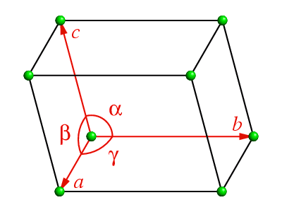

The atomic arrangement within a crystalline material is usually described using a Space Lattice. A space lattice is an infinite set of equally spaced points in a space[cite: 12, 13]. A set of lines is often drawn to connect these points simply to provide a useful visual guide to the eye—the lattice itself is the points, not the lines[cite: 12].
A Unit Cell is defined as a parallelepiped with its origin at a specific lattice point[cite: 12]. It is the basic structural building block of the crystal structure, defined by its lattice parameters (edge lengths a, b, c) and interaxial angles (α, β, γ)[cite: 12].

Key Metrics in Crystal Lattices:
- Coordination Number: The number of nearest neighbors an atom possesses[cite: 12].
- Simple Cubic (SC) = 6
- Body-Centered Cubic (BCC) = 8
- Face-Centered Cubic (FCC) = 12
- Atomic Packing Factor (APF): Calculated as the (Volume of atoms in a unit cell) divided by the (Volume of the unit cell)[cite: 12].
Practice Exercises
Test your knowledge on Space Lattices and Unit Cells.
1. How is a "Space Lattice" formally defined?
A) A finite grid of intersecting lines
B) An infinite set of equally spaced points in a space
C) The physical bonds between adjacent atoms
2. What is the coordination number of a Face-Centered Cubic (FCC) structure?
A) 6
B) 8
C) 12
3. How is the Atomic Packing Factor (APF) calculated?
A) Volume of the unit cell / Volume of atoms
B) Volume of atoms in a unit cell / Volume of the unit cell
C) Mass of atoms in a unit cell / Volume of the unit cell
4. What is the coordination number of a Body-Centered Cubic (BCC) structure?
A) 6
B) 8
C) 12